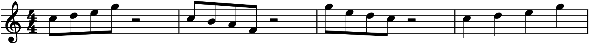
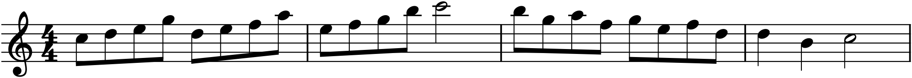

The most famous opening in music — the four notes that begin Beethoven’s Fifth Symphony — is not a melody. It is a motive: three short notes and a long one, a rhythm and a shape barely long enough to be called an idea. And yet Beethoven builds an entire movement, minutes of music, almost entirely out of it, by turning it over and over — moving it, flipping it, stretching it, breaking it into pieces. That process is motivic development, and it is the deepest craft in composition: the art of getting the most from the least. This chapter is the toolkit. Learn these transformations and you will never again face a blank page wondering what comes next, because the answer is almost always something made from what you already have.
19.1A motive’s two dimensions
A motive has two independent dimensions, and it is worth separating them, because each can be developed on its own. There is its rhythm — the pattern of long and short — and its pitch shape, or contour — the pattern of up and down. Beethoven’s motive is rhythmically “short-short-short-long” and melodically “same-same-same-down.” You can keep the rhythm and change the pitches, or keep the contour and change the rhythm, and each yields a recognizable relative of the original. Much of development is exactly this: holding one dimension fixed while varying the other, so the listener feels the connection even as the music moves on.
19.2The core transformations
Here is the standard set of operations, shown on one small rising motive so you can compare them directly:

Working through Figure 19.1 and adding the operations that need no picture, the full toolkit is:
- Repetition — simply stating the motive again. The most basic development of all, and never to be underrated: repetition is how an idea becomes memorable.
- Transposition and sequence — moving the motive to a new pitch level. When several transpositions follow in a consistent pattern, that is the sequence of Chapter 17 — the workhorse of development.
- Inversion — flipping the contour (bar 2). Where the original rose a step, the inversion falls a step; the shape is mirrored. The rhythm usually stays the same, so the kinship is clear.
- Retrograde — running the motive backwards (bar 3). This is more a device for the eye and the intellect than the ear — a reversed melody is often hard to recognize by listening — but it is a real tool, and composers from Bach to the twentieth century have used it.
- Augmentation and diminution — stretching the rhythm (bar 4, durations doubled) or compressing it (durations halved). The pitches stay; only the pace changes. Augmentation makes a motive grand and broad; diminution makes it urgent and quick.
- Fragmentation — taking just part of the motive — its first two notes, say — and developing that alone. This is how music intensifies toward a climax: the idea is whittled down to its most essential cell and repeated, a process sometimes called liquidation.
Every one of these keeps some thread of the original — its rhythm, its contour, or a fragment of it — so that the music stays unified while it changes. That is the whole secret: change enough to move forward, keep enough to cohere.
19.3Development in action
The transformations are not museum pieces to be admired one at a time; they are combined, fluidly, to grow real music. Here is a short melody built entirely from the rising motive of Figure 19.1 — no new material at all, only the motive worked:

The melody in Figure 19.2 demonstrates the economy that motivic thinking makes possible. It has shape (a clear arch to the high C and back, per Chapter 17), it has phrase structure (it builds and cadences, per Chapter 18), and it has complete unity — because it is all one idea. Compare this with trying to invent a fresh melodic thought for every bar, and you see why development is not a constraint but a liberation: you need one good idea, not twenty, and the one idea, thoroughly worked, will sound more coherent than the twenty ever could.
19.4The discipline of economy
The lesson underneath all of this is the hardest one for beginners to trust: great music is astonishingly economical. The temptation, faced with a blank bar, is to write something new. The discipline of development is to resist that — to look back at what you have already said and ask what you can do to it instead. Repeat it. Sequence it. Turn it upside down. Take half of it and run. A composer who has internalized this never runs out of material, because the material generates itself; each idea contains the seeds of the next several bars.
This is also, not coincidentally, how the pieces you most admire achieve their sense of inevitability — the feeling that each moment had to follow the last. That inevitability is the sound of a single idea unfolding. In Part 4, motives and phrases will be assembled into whole forms; in the Projects, you will grow your own melody exactly this way. For now, the essential shift is one of mindset: your job as a composer is less to keep inventing than to keep developing — to plant one small, good idea and then find out everything it can become.
In MuseScore
MuseScore automates several of these transformations, so you can try them on your own motive in seconds and hear the result.
- Sequence: select the motive, copy (Ctrl+C), paste it onward, and transpose the copy with ↑/↓ or Tools ▸ Transpose — repeat for each step of the sequence (Chapter 17’s box).
- Retrograde: select the passage and use Tools ▸ Retrograde to reverse it end-to-end.
- Inversion: Tools ▸ Invert flips the contour around the first note — the mirror image of Figure 19.1’s bar 2.
- Augmentation and diminution: select the notes and use Tools ▸ Augmentation / Diminution (or simply re-enter them with doubled or halved durations) to stretch or compress the rhythm.
- Fragmentation: just delete part of a copied motive, keeping the cell you want to develop, and repeat that.
Try it: enter the four-note motive C–D–E–G, then use these tools to generate its inversion, its retrograde, and an augmented version, laying them out bar by bar as in Figure 19.1. Then, starting fresh, copy-and-transpose the motive up the scale a few times and add a small cadence — you will have reconstructed something like Figure 19.2, a whole phrase spun from four notes, and you will have felt firsthand how far one small idea can travel.